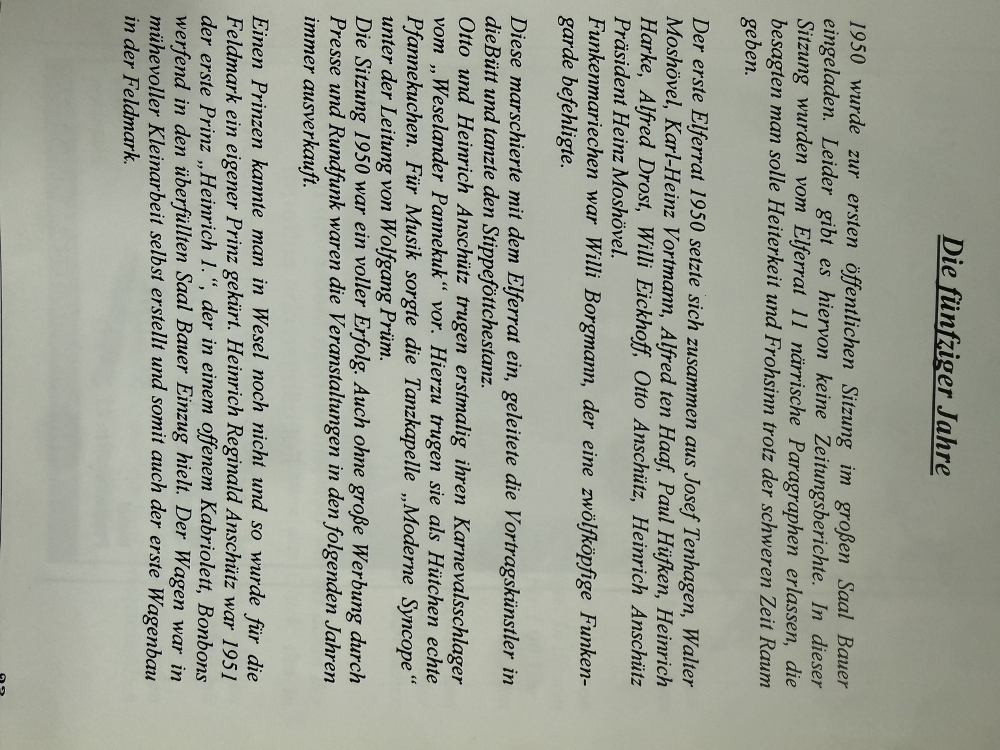
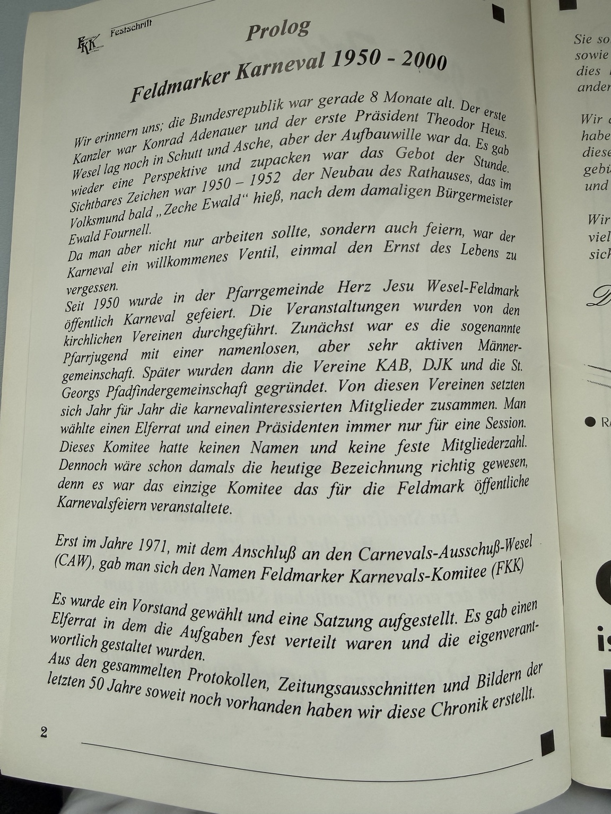
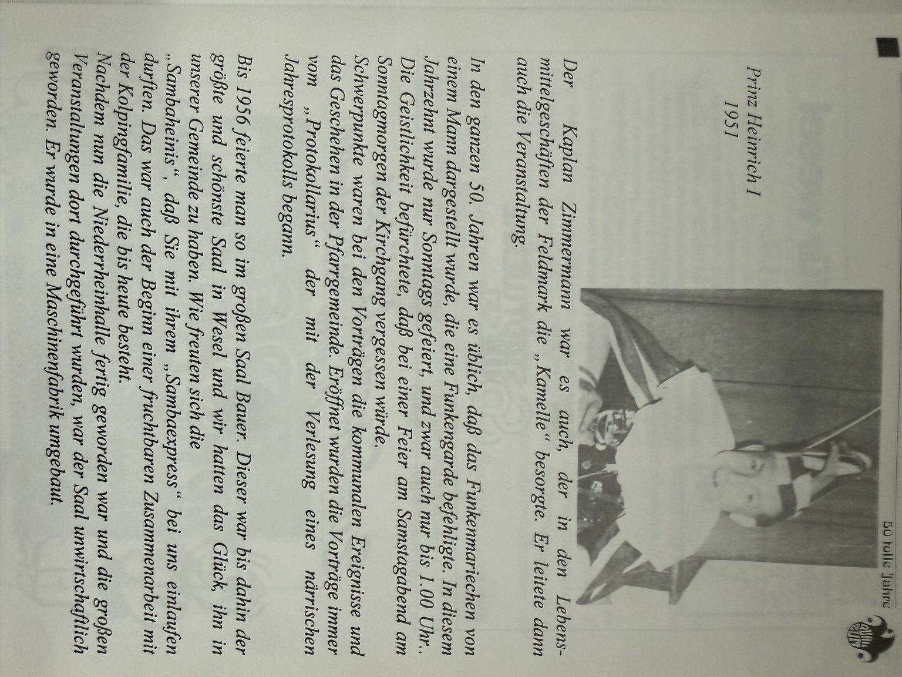
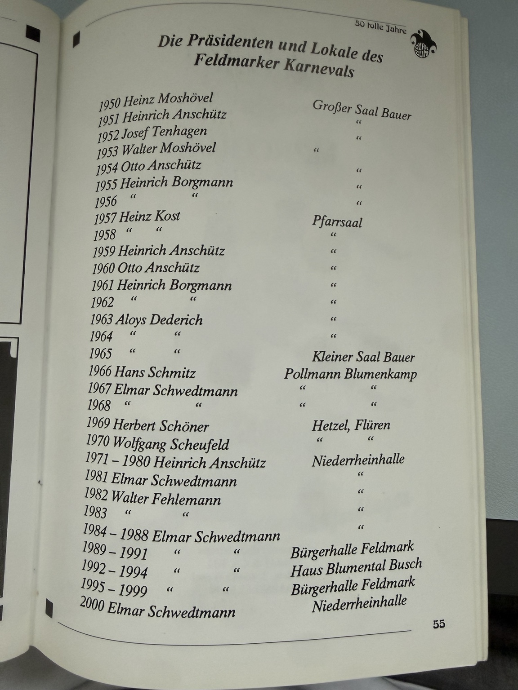
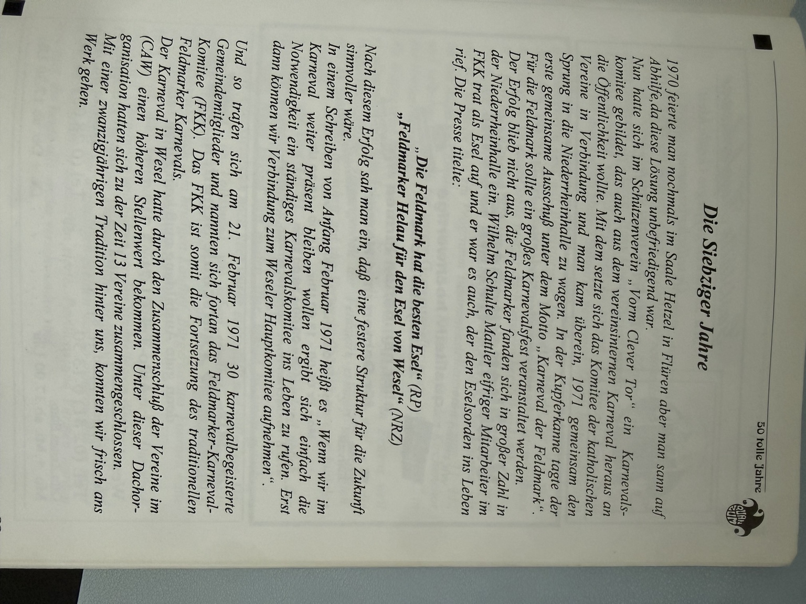
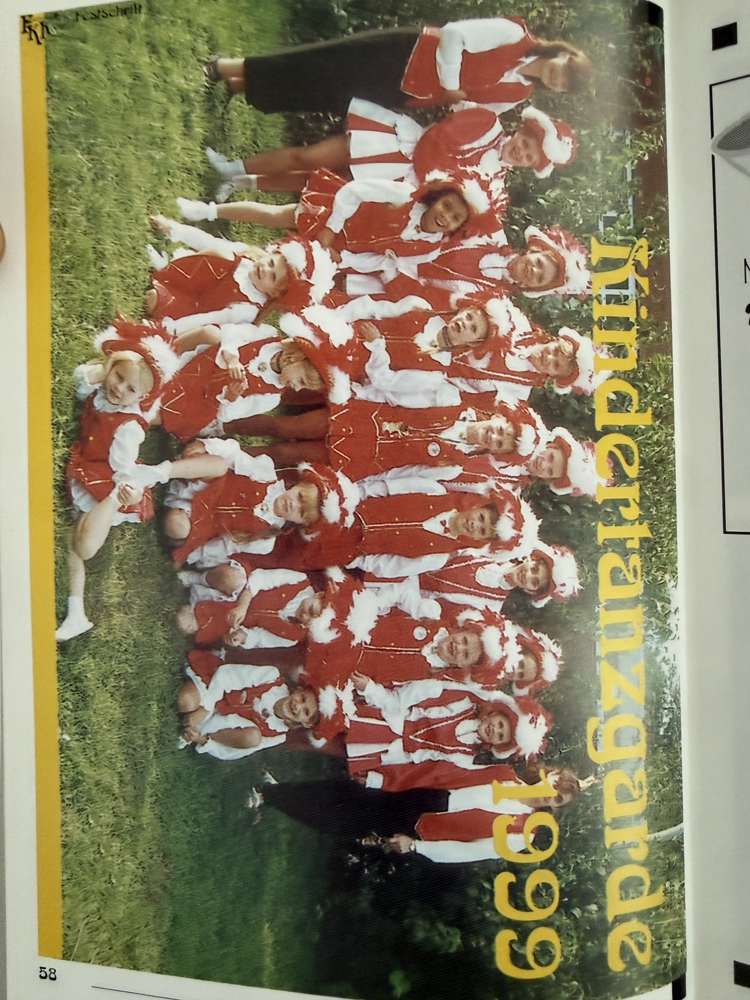
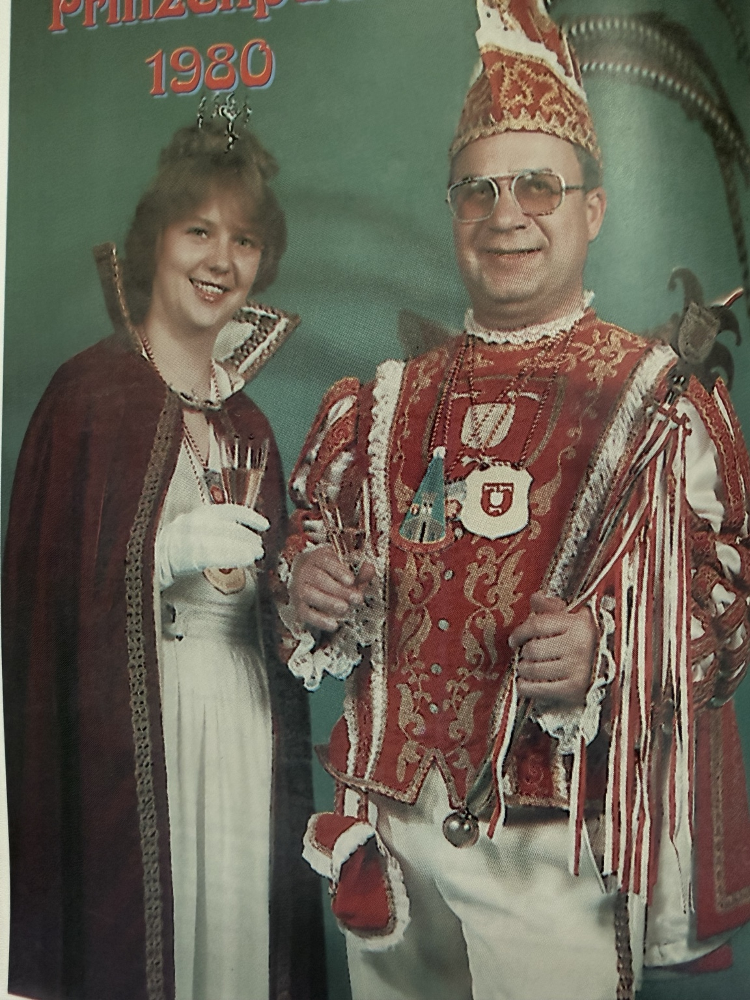
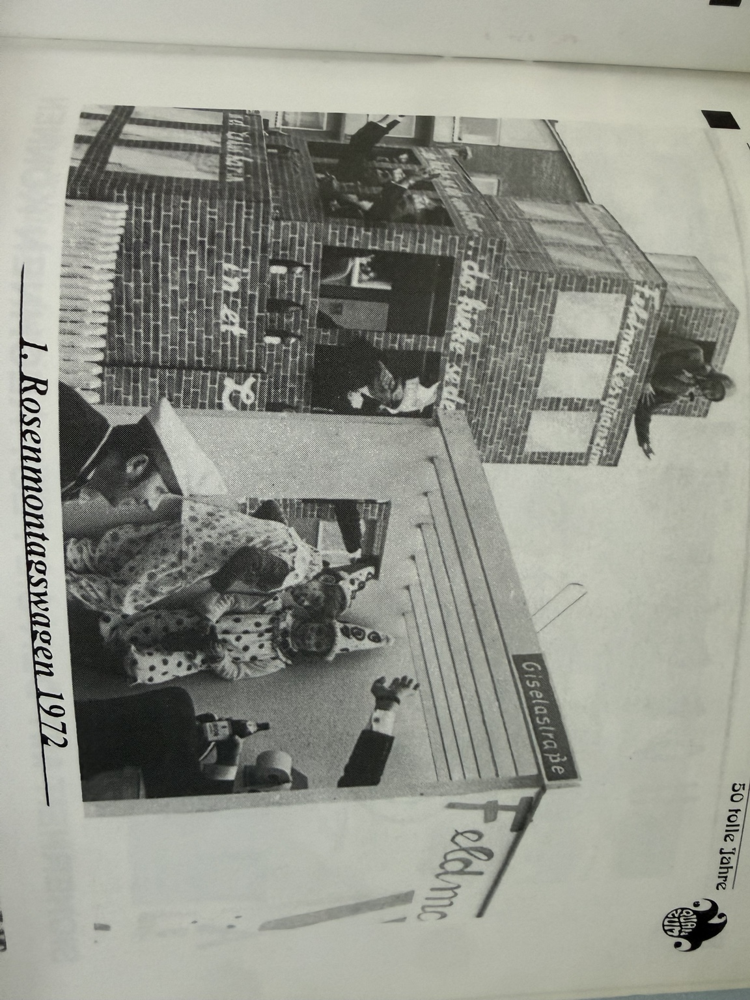
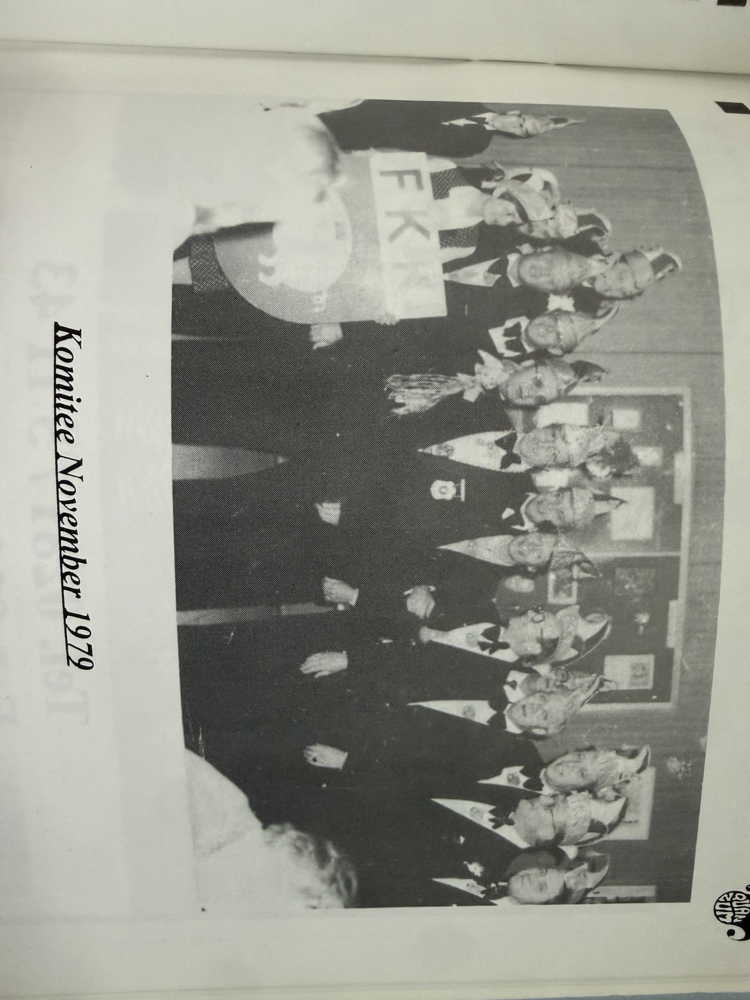
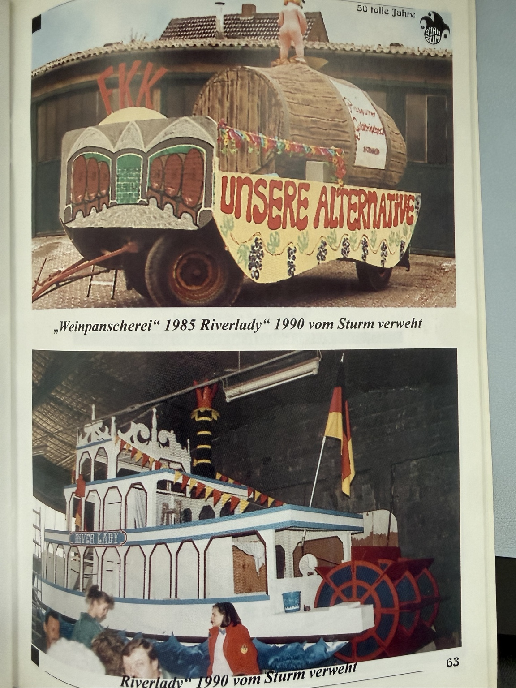

Wie aus Lebensfreude Tradition wurde
Als 1950 in der Feldmark wieder öffentlich Karneval gefeiert wurde, war Wesel noch deutlich vom Wiederaufbau geprägt. Gerade deshalb hatte das gemeinsame Feiern eine besondere Bedeutung. Karneval war ein Ventil, eine kleine Flucht aus dem Ernst des Alltags – und vor allem ein Zeichen dafür, dass Gemeinschaft wieder möglich war.
Die ersten Veranstaltungen entstanden im Umfeld der Pfarrgemeinde Herz Jesu Wesel-Feldmark. Aus einer zunächst namenlosen, aber sehr aktiven Gemeinschaft formte sich Jahr für Jahr ein fester Kreis karnevalsbegeisterter Menschen. Man wählte einen Elferrat und einen Präsidenten, zunächst jeweils nur für eine Session.
Die ersten närrischen Jahre
1950 wurde im großen Saal Bauer zur ersten öffentlichen Sitzung eingeladen. Überliefert ist ein lebendiger Elferrat mit Sketchen, Gesang und Tanz. Zum ersten Elferrat gehörten unter anderem Josef Tenhagen, Walter Moshövel, Karl-Heinz Vortmann, Alfred ten Haaf, Paul Hüfken, Heinrich Harke, Alfred Drost, Willi Eickhoff und Otto Anschütz. Präsident war Heinz Moshövel.
1951 bekam die Feldmark ihren ersten eigenen Prinzen: Prinz Heinrich I. Heinrich Reginald Anschütz wurde im überfüllten Saal Bauer gekürt. Der Wagen, mit dem er später durch Wesel zog, entstand in Eigenarbeit. Damit begann eine Tradition, die den Feldmarker Karneval bis heute prägt: Ideen gemeinsam bauen und sichtbar durch die Stadt tragen.




Die Feldmark wächst – der Karneval wächst mit
In den 1960er-Jahren veränderte sich die Feldmark sichtbar. Neue Häuser entstanden, die Einwohnerzahl stieg, und auch der Karneval entwickelte sich weiter. Veranstaltungsorte wechselten, neue Ideen kamen hinzu, alte Traditionen wurden angepasst. Nicht jedes Jahr war einfach – aber immer wieder fanden sich Menschen, die Verantwortung übernahmen und die nächste Session möglich machten.

Aus der Gemeinschaft wird das FKK
1971 wurde zu einem entscheidenden Jahr. Mit dem Anschluss an den Carnevals-Ausschuß-Wesel gab sich die Gemeinschaft den Namen Feldmarker Karnevals-Komitee – FKK. Ein Vorstand wurde gewählt und eine Satzung aufgestellt. Aus dem über Jahre gewachsenen Karnevalskreis wurde eine feste Vereinsstruktur.
Ab 1972 begann der FKK regelmäßig Wagen für den Rosenmontagszug zu bauen. Was mit Holz, Farbe, handwerklichem Geschick und viel Improvisation begann, wurde zu einem Markenzeichen. Wagenbau bedeutete nie nur Arbeit – er bedeutete Gemeinschaft.

Prinzen, Sitzungen und große Ideen
1980 blickte der Feldmarker Karneval bereits auf 30 Jahre Tradition zurück. Ein besonderer Höhepunkt war das Prinzenpaar Prinz Ermar I. und Prinzessin Helga II. mit Hofmarschall Wolfgang Scheufeld. Die Prinzenproklamation fand in der Niederrheinhalle statt.
Auch der Wagenbau wurde immer aufwendiger. Themen, Kulissen und handwerkliche Details machten die Wagen zu echten Gemeinschaftsprojekten. In der Festschrift finden sich zahlreiche Erinnerungen an diese Arbeiten und an die Freude, mit der sie entstanden.



Der Nachwuchs wird zur Zukunft
In den 1990er-Jahren rückte die nächste Generation stärker in den Mittelpunkt. Kinder und Jugendliche wurden ein sichtbarer Teil des Vereinslebens. Tanz, Kostümball und gemeinsame Auftritte halfen dabei, Begeisterung weiterzugeben.
Gleichzeitig blieb der FKK offen für Neues. Veranstaltungsorte veränderten sich, neue Formate kamen hinzu, und doch blieb der Kern gleich: Menschen kommen zusammen, weil sie Freude am Karneval und aneinander haben.
50 Jahre Feldmarker Karneval
Im Jahr 2000 blickte die Feldmark auf ein halbes Jahrhundert Karneval zurück. Aus den ersten Sitzungen im Saal Bauer war ein fest verwurzelter Teil des Weseler Karnevals geworden.
Die Festschrift „50 tolle Jahre“ hielt fest, was bis dahin gewachsen war: Präsidenten, Veranstaltungsorte, Prinzenpaare, Wagenbau, Sitzungen, Nachwuchsarbeit und unzählige Menschen, die ihre Freizeit in den Dienst des Karnevals gestellt hatten.

Aus Tradition ist Zukunft geworden
Heute ist der FKK weit mehr als der Elferrat der Anfangsjahre. Der Verein verbindet gewachsene Traditionen mit neuen Ideen und öffnet sich bewusst für kommende Generationen. Der Wagenbau lebt weiter, ebenso das Tanzen, die Sitzungen und das gemeinsame Feiern.
Heute gehören auch neue Veranstaltungsformate, Charity-Projekte, moderne Kommunikation, die eigene Internetseite und der Online-Mitgliedsantrag zum Vereinsleben. Vieles hat sich verändert – aber das Wichtigste ist geblieben: Menschen übernehmen Verantwortung, lachen miteinander und schaffen Erinnerungen.
Genau darin liegt die Verbindung zwischen 1950 und heute. Namen, Präsidenten, Säle, Kostüme und Technik ändern sich. Die Freude an Gemeinschaft bleibt.
77 Jahre – und die Geschichte geht weiter.
Diese Seite ist kein Schlusskapitel. Sie ist eine Einladung, die Geschichte des Feldmarker Karnevals weiterzuschreiben – mit neuen Mitgliedern, neuen Ideen und derselben Freude, mit der 1950 alles begann.
Teil der Geschichte werdenHistorische Grundlage sind die vom Verein bereitgestellten Seiten und Bilder aus der Festschrift zum Feldmarker Karneval 1950–2000. Die Darstellung der heutigen Vereinsarbeit wurde für diese Jubiläumsseite fortgeführt.